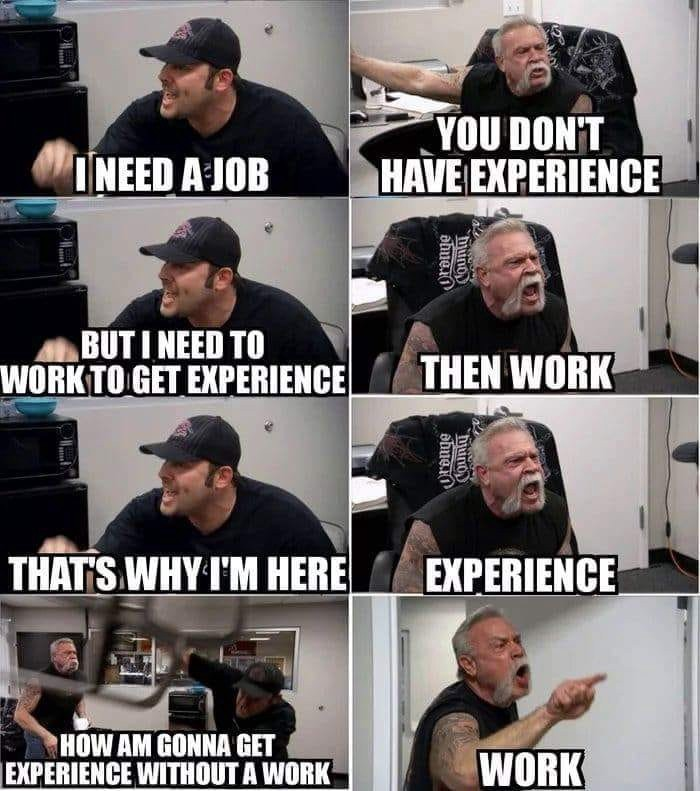

Rólunk:
Mi vagyunk az Anonymus Szoftverfejlesztő csapat.
Csapatunk 3 tagból áll, kiket lentebb ismertetünk.
Cégünk 2022 óta létezik, és a célunk, hogy kizárólagosan mínőségi munkákat adjunk ki kezeinkből partnereinknek. Szoftvereink célja a felhasználók segítése a mindennapi életben a digitalizáció által. Folyamatosan a szemünk előtt tartjuk az igényeket, hogy folyamatosan tudjuk fejleszteni irányukba a szoftvereink.
Cégünk mindemellett állást is hírdet a feltörekvő Szoftverfejlesztőknek, akik még nem találtak állást, hogy ez által együtt tudjunk tapasztalatott szerezni és ezáltal ne kerüljünk olyan helyzetbe, mint a jól ismert mém-ben.
Csapattagok bemutatkozása
| Kerekes István | Molnár Viktor | Korsós Ádám |
|---|---|---|
|
Novice Backend programozó(semmihez se ért); Szakmai készségei:
|
Mester weblapszerkeztő, Színek mestere 2018 óta csapatunk tagja végzetségei:
|
Mester Hacker a 2008-as gazdasági válság okozója. |
| Az adatok a tagok engedélyével lettek feltüntetve | ||